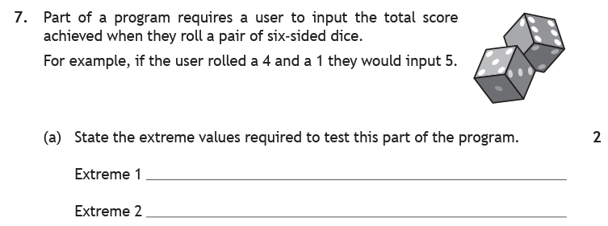
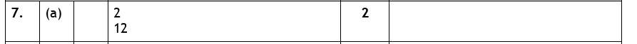
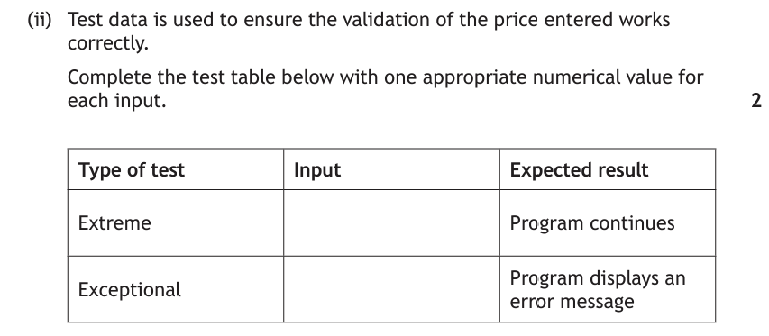
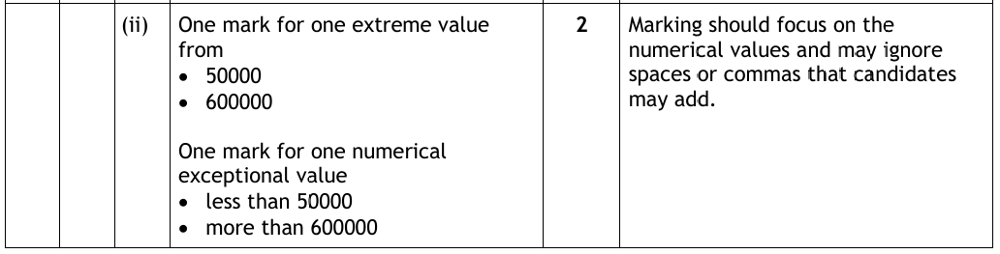
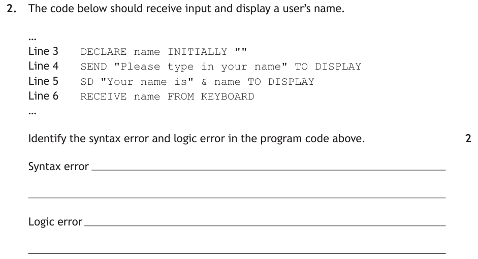
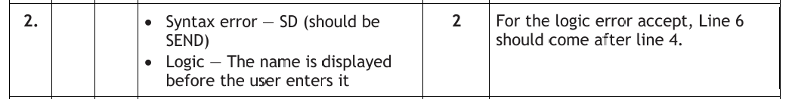
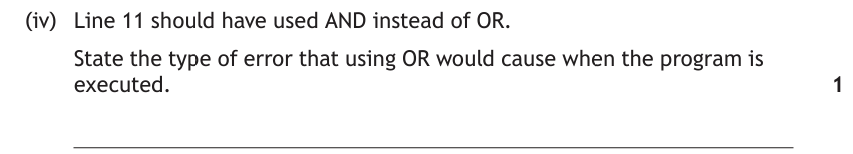
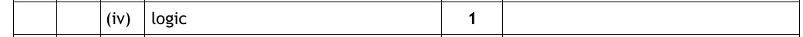

Introduction
Your program runs. Brilliant! But running and working are not the same thing. Testing is how we find out whether a program actually does what it's supposed to — by feeding it carefully chosen test data and comparing what it does with what it should do. And when the two don't match, we need to work out what kind of error we're dealing with.
Key Terms
Types of Test Data
Testing a program once with one sensible value proves almost nothing. Good testing tries to capture a range of scenarios — including the awkward ones. That's why we always test with three types of data.
A program asks the user to guess a number between 0 and 10 inclusive. Anything outside that range should produce an error message.
| Type | Suitable values | Why |
|---|---|---|
| Normal | 3, 5, 7 | Comfortably inside the range — should sail through |
| Extreme | 0 and 10 | The minimum and maximum — right on the boundary, but still valid |
| Exceptional | -4, 26, "ten" | Outside the range (or the wrong type entirely) — should be rejected |
The one people mix up is extreme. Extreme data is not bad data — it's the edge of what's allowed. Take a standard 6-sided dice: 1 and 6 are extreme values, and the program should absolutely accept them — it's perfectly valid for a dice to roll a 6. But 180? A dice can't roll 180. That's exceptional.
Why do the boundaries get their own category? Because that's where programs break. A condition written as guess > 0 instead of guess >= 0 works perfectly for normal data and only fails when someone enters exactly 0 — which is precisely why we always test the edges.
Here's a past paper question that looks easy and catches people out constantly. Write your two values down before opening it.

How to tackle it: Extreme data sits on the edges of what is allowed, so our job is to find the smallest and largest values the program should accept. Before we can do that we have to be clear about one thing: what is the user actually typing in?
Read the question again. The user isn't entering one dice roll — they're entering the total of two. So we work the edges out from there:
- Lowest possible total: 1 + 1 = 2
- Highest possible total: 6 + 6 = 12
Watch the trap: the tempting answers are 1 and 6, because those are the numbers printed on a dice. But a total of 1 is impossible with two dice — so 1 isn't extreme data at all, it's exceptional. Whenever a question describes an input that is added up, doubled or counted, calculate the boundary rather than lifting a number straight out of the text.
And remember both of these values are valid. The program should accept 2 and 12 without complaint — we test them because that's exactly where an < that should have been a <= gives itself away.

So the answer is:
Extreme 1 — 2
Extreme 2 — 12
Test Data Number Line
Drop values onto the accepted range and watch them classify themselves. Try the boundary on purpose — the value on the edge and the value one step outside look almost identical and land in completely different zones. Every value you test is added to a test table underneath, and the tally tells you when you've covered all three types. Tab 3 is the two-dice question above; tab 4 swaps to measuring a length instead of a value.
Test Tables
Test data gets recorded in a test table. Two rules:
- One actual value per row — don't write "anything between 1 and 9"; pick one!
- Say what you expect the program to do for each value — before you run the test.
| Test data | Type | Expected result | Actual result |
|---|---|---|---|
| 5 | Normal | Guess accepted | |
| 0 | Extreme | Guess accepted | |
| 10 | Extreme | Guess accepted | |
| 26 | Exceptional | Error message shown, asked again |
The "actual result" column is filled in after testing — and the whole point of the table is comparing the two columns. Wherever expected and actual disagree, you've found an error.
In the exam you're often handed a half-finished test table and asked to fill the gaps. This one follows on from the property search app whose input validation you may already have designed — the price entered must be between £50,000 and £600,000.

How to tackle it: The gaps are all in the Input column, and the two columns either side of them have already been filled in for us. Read those first — they tell us exactly which side of the boundary each answer has to land on.
- Extreme, expected result "program continues" — so the value must be accepted. Accepted and on the edge means one of the two boundary values themselves: 50000 or 600000.
- Exceptional, expected result "program displays an error message" — so the value must be rejected. That means anything outside the range: below 50000 or above 600000. 49999 does the job nicely.
Watch the trap: one actual value per box. "Between 50000 and 600000", "too low" or "any big number" all score zero — the marker needs a number they could type in. And the question says "one appropriate numerical value", so an answer like "cheap" or a word wouldn't be accepted here even though wrong-type data is normally fine as exceptional data.
The other classic slip is putting 50000 in the exceptional row. 50000 is inside the accepted range — the validation lets it straight through, so the expected result wouldn't match.

A completed table would be:
| Type of test | Input | Expected result |
|---|---|---|
| Extreme | 600000 | Program continues |
| Exceptional | 49999 | Program displays an error message |
50000 would earn the extreme mark equally well, and any value above 600000 would earn the exceptional mark. The marking instructions add a small mercy: they ignore spaces and commas, so 600,000 is fine.
The Three Error Types
When a test fails (or the program won't run at all), the problem is one of three types of error. Each one shows up differently — and knowing how each shows up is exactly what lets you identify them.
Syntax errors
A syntax error breaks the rules of the language — a misspelling, wrong symbols, brackets in the wrong place. The program won't run at all: the translator spots the problem first and reports an error message, usually with a line number (so no, you don't have to hunt through the whole program).
priiiint("Hello") # misspelled print
print("Hello," name) # comma in the wrong place
range[0, 10] # square brackets instead of range(0, 10)
Logic errors
A logic error is sneakier: the program runs perfectly happily, no error message appears — but the results are wrong. The rules of the language weren't broken; your thinking was.
# Meant to check a rating out of 10... but tests up to 100!
if rating >= 0 and rating <= 100:
print("That is a rating out of 10")
name = input("What is your name? ")
age = input("How old are you? ")
print("Hello", age, ". You are", name, "years old.")
# Bob, aged 15, is greeted with: "Hello 15. You are Bob years old."
How do you catch errors that don't announce themselves? Test data. The wrong-way-round variables above sail through a casual glance — but the moment you compare actual output against expected output in a test table, the nonsense is obvious.
Execution errors
An execution error (or run-time error) happens while the program is running — something occurs that the program can't cope with, and it crashes. Classic causes:
- The user types a string when the program expects an integer
- The program tries to divide by zero
- A file the program needs is missing or renamed
Notice the timing: the code itself can be perfectly legal — the crash depends on what happens at run time. The same program might run fine a hundred times, then crash the moment someone types "five" instead of 5. Programs that defend themselves against this (mainly with input validation) are called robust — see Evaluation.
When each error shows itself
The three types aren't really three kinds of mistake — they're three moments at which a mistake gets found. Follow each lane across the life of a program:
That's the whole distinction. A syntax error never gets to run; an execution error runs and then stops; a logic error runs to the end and lies to you. Notice which lane is the longest — the error that causes the least fuss is the hardest one to find.
Exam questions often hand you a short piece of code containing more than one fault and ask you to name both. Read the code below and write down your two answers before opening the walkthrough.

How to tackle it: Two marks, and the question names the two error types for us — one syntax, one logic. That's a useful hint in itself: we're looking for one thing that breaks the rules of the language, and one thing that is perfectly legal but does the wrong thing. They will not be the same line.
The syntax error — check the keywords. Line 3's DECLARE … INITIALLY is fine. Line 4's SEND … TO DISPLAY is fine. Line 6's RECEIVE … FROM KEYBOARD is fine. Line 5 begins SD — and there is no such keyword. It should be SEND. The translator would stop right there and refuse to run the program.
The logic error — check the order. Now read the lines as a sequence, as if we were the computer:
- Line 4 asks the user to type their name
- Line 5 displays "Your name is" joined to
name - Line 6 then reads what the user typed
Line 5 displays the name before line 6 puts anything into it — so the program shows "Your name is" followed by the empty string from line 3. Nothing is misspelled and nothing crashes. It runs, and it's wrong: a textbook logic error.
Watch the trap: quoting a line number is not an answer. "Line 5" on its own earns nothing — say what is wrong with it. For the logic error, either describing the fault ("the name is displayed before it is entered") or the fix ("line 6 should come before line 5") is accepted.

So the answer is:
Syntax error — line 5 uses SD, which should be SEND.
Logic error — the name is displayed (line 5) before the user has entered it (line 6); line 6 should come immediately after line 4.
Identifying Error Types from a Scenario
Exam questions describe what happened and ask you to name the error type. The good news: each error type has a tell. Match the symptom to the error:
| What the scenario says | Error type | The tell |
|---|---|---|
| "The program won't run" / "an error message points to line 12" / "print is spelled pirnt" | Syntax | Caught before the program runs |
| "The program runs but the total is wrong" / "it gives the wrong grade" / "no error message appears" | Logic | Runs fine, wrong answers |
| "The program crashes when the user enters…" / "it stops part-way through" | Execution | Crashes while running |
Ask yourself two questions, in order: Did it run? If no — syntax. Did it crash? If yes — execution. If it ran to the end and was simply wrong — logic.
Here are those two questions drawn out properly — and since it's a flowchart, it doubles as a reminder of the notation from the Design page:
These questions are usually worth a single mark and take about ten seconds — if you keep the two questions in your head. Here's one where the wording is deliberately slippery.

How to tackle it: Run the two questions in order.
Did it run? Yes. OR is a real logical operator, correctly spelled and in a sensible place — the translator has nothing to complain about. So it isn't a syntax error.
Did it crash? No. Whether the condition uses AND or OR, it still evaluates to true or false and the program carries on to the next line. So it isn't an execution error.
That leaves the last case: the program runs from start to finish, says nothing, and produces the wrong result. Swapping AND for OR makes the condition true far more often than it should be, so the wrong branch runs. That is a logic error.
Watch the trap: the question ends "…when the program is executed", and it is very tempting to answer "execution error" because the word is sitting right there. It isn't a hint — it's just telling us the program does run, which is what rules syntax out. Never let a word in the question choose your answer for you.
One more thing worth noticing: a wrong logical operator is one of the most common causes of logic errors at National 5, precisely because the code looks completely healthy. Only test data will expose it.

So the answer is:
Logic error
Error Spotter
Ten scenarios in a random order — syntax, logic or execution? Every answer comes with the reasoning, and the hint panel puts the two questions from the flowchart above in front of you if you need them. Watch for the ones written to be misleading: the wording is deliberately unhelpful, and only what actually happened to the program decides the answer.
Practice Questions
Each of these tests the same skill as one of the worked examples above — but none of them has the same answer. Write your answer down before opening the marking instructions.
A fitness app asks the user to enter their resting heart rate. The app accepts whole numbers from 40 to 200 beats per minute inclusive.
State the type of test data — normal, extreme or exceptional — for each of the values below.
| Value entered | Type of test data |
|---|---|
| (a) 39 | |
| (b) 72 | |
| (c) 200 | |
| (d) sixty |
Marking Instructions
One mark each:
- (a) 39 — exceptional (one below the minimum, so it must be rejected)
- (b) 72 — normal (comfortably inside the range)
- (c) 200 — extreme (the maximum itself — still valid, still accepted)
- (d) sixty — exceptional (the wrong data type entirely)
Parts (a) and (d) are both exceptional for different reasons — exceptional covers anything the program should refuse, whether it's out of range or the wrong type. Part (c) is the one that costs marks: 200 is the edge of what's allowed, not something invalid, so it is extreme rather than exceptional.
Part of a program requires a player to input the total score from three darts. Each dart scores from 0 to 20.
State the extreme values required to test this part of the program.
Marking Instructions
One mark each for 0 and 60.
The input is the total of three darts, so the boundaries have to be calculated: 0 + 0 + 0 = 0 and 20 + 20 + 20 = 60. Do not accept 0 and 20 — that's the range of a single dart, not of the value being entered. Note also that the minimum here is 0, not 1: a dart that misses the board scores nothing.
A program checks that a new password is at least 8 and at most 12 characters long.
Complete the test table below with one appropriate value for each input.
| Type of test | Input | Expected result |
|---|---|---|
| Extreme | Password accepted | |
| Exceptional | Program displays an error message |
Marking Instructions
One mark each:
- Extreme — any password of exactly 8 or exactly 12 characters, e.g.
computer(8) orchocolatecak(12) - Exceptional — any password of 7 or fewer, or 13 or more, characters, e.g.
catorsupercalifragilistic
The catch is what's being measured. Here the boundary is a length, but the input is still a password — so write an actual password, not the number 8. Answers of "8", "13" or "a short password" earn nothing, because they aren't things the user could type into the box.
A team is testing a ferry booking program. State the type of error in each of the following cases.
- The program will not run at all. The translator reports a problem at line 12, where
prnithas been typed instead ofprint. - The program runs to the end and displays a total fare of £0.00 for every booking. No error message appears.
- The program stops part-way through and displays "ZeroDivisionError" when a booking is made for 0 passengers.
Marking Instructions
One mark each:
- (a) Syntax error — a misspelled keyword, caught by the translator before the program runs
- (b) Logic error — it runs perfectly happily and gives the wrong answer, with no error message
- (c) Execution error (accept run-time error) — it crashes while running because of what happened at run time
Every one of these is decided by the two questions: did it run, and did it crash? Part (b) gives itself away with "no error message appears" — that phrase almost always means logic.
The code below should add the price of an item to a running total and display the new total.
Line 4 DECLARE total INITIALLY 0 Line 5 DECLARE price INITIALLY 0 Line 6 RECIEVE price FROM KEYBOARD Line 7 SET total TO total - price Line 8 SEND total TO DISPLAY
Identify the syntax error and the logic error in the program code above.
Marking Instructions
One mark each:
- Syntax error — line 6 is spelled
RECIEVE; it should beRECEIVE - Logic error — line 7 subtracts the price from the total instead of adding it; it should be
SET total TO total + price
Line 7 is legal code — the language is perfectly happy to subtract — so nothing is reported and nothing crashes. It simply produces a total that goes down every time you add an item. Do not award marks for a line number alone; the fault has to be described.